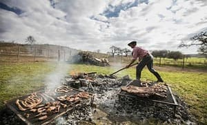

Veni a Descubrir Cordoba Con El Turismo Alternativo
Te llevaremos a descubrir los rincones mas secretos de nuestra amada provincia, organizando excursiones tanto para la motoaventura como para aquellos que aman el contacto con la naturaleza a pie y degustaras comidas autoctonas de nuestra querida Argentina

Creamos el mejor viaje de tu vida
Te llevaremos a conocer cada rincon magico de nuestra amada provincia, tenemos amplia experiencia en trekking, montañismo. Conocemos las mejores rutas y caminos secretos que te haran vivir una experiencia unica junto a nosotros, no te lo pierdas.
MOTOCICLISMO
Cordoba se la conoce por sus sierras, sus caminos sinuosos, sus refrescantes rios y si algo no le puede faltar a tan bella provincia son los tuneles de chancani.
TREKKING

Una aventura sin escala, te llevaremos a visitar maravillosas cascadas, rios subterraneos, los cerros mas altos de la provincia, el imponente cerro champaqui a traves de Villa Alpina, las gigantescas rocas que rodean al cerro mogote, como asi tambien vistas imperdibles desde nuestro amado y mitido cerro uritorco.
GASTRONOMIA
Uno de los grandes placeres de la vida es comer, sabemos eso por eso te invitamos a conocer exclusivos restaurantes donde podras deleitarte con ricos locros, empanadas fritas, pan de campo y particularmente nuestros chivitos.